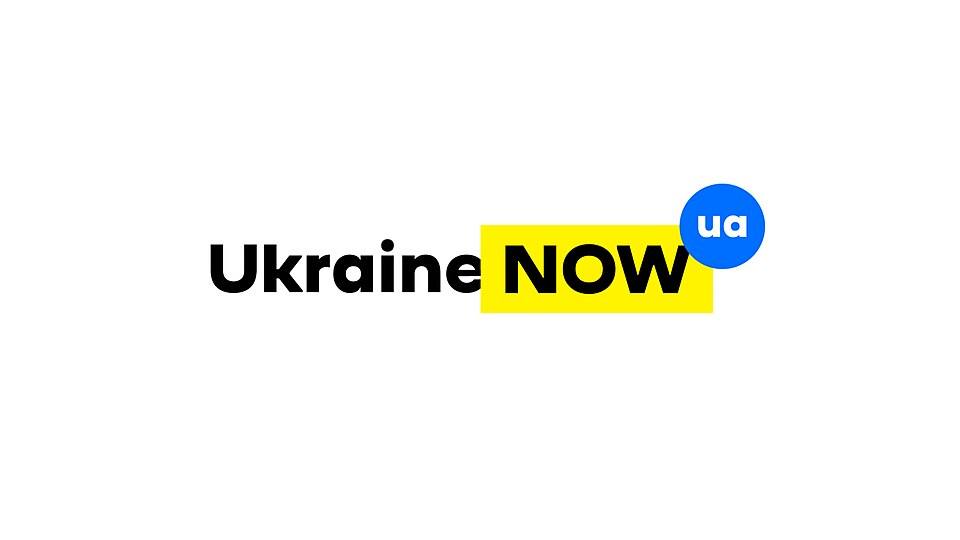

.jpg)
01 / Знак без текстуПереглянути джерело ↗
Nike
На стіні магазину знак працює навіть без назви. Яку дію він нагадує?
Пояснення дизайнера
Рух, динаміка, проста силуетна форма
Створюємо власну візуальну ідентичність: від спільних принципів — до гасла, знака й першої презентації.
Відкрити дизайн-лабораторію ↓Автор: Скринченко К.А. · Василівський ліцей «Сузір’я»

BRAND DESIGN / REAL CASES / 2026Проблемне питання
Чи може один невеликий символ і коротка фраза передати характер цілої команди — без довгих пояснень?
Уявіть: ваша команда планує ярмарок професій. Відвідувач бачить ваш стенд лише кілька секунд. Що він має відразу зрозуміти: ви дослідники, винахідники, помічники, захисники природи чи щось інше?
Завдання: висловіть першу гіпотезу одним реченням. Наприкінці уроку ви перевірите її на власному дизайні.
Цінності — не просто красиві слова. Це принципи, за якими команда ухвалює рішення та діє. Оберіть рівно три, які готові підтверджувати справами.
Обрано 0 з 3.
Якщо один учасник наполягає на сміливості, а інший — на обережності, спробуйте домовитися: що команда робить, коли ці принципи вступають у суперечність?
Обрані цінності передадуться до дизайн-майстерні.
Десять прикладів застосування справжніх логотипів: вивіски, транспорт, фасади та фірмові знаки. Фотографії та зображення — з Wikimedia Commons; посилання на оригінали й ліцензії доступні під кожним прикладом. Для завантаження фотографій потрібен інтернет.
На стіні магазину знак працює навіть без назви. Яку дію він нагадує?
Рух, динаміка, проста силуетна форма

Придивіться до проміжку між E та x. Що приховано?
Стрілка у білому просторі між літерами
Як шрифт, коротке гасло й кольорові плашки перетворюються на гнучку систему?
Модульність, повторюваність, застосування на різних носіях

Чому назву на червоному транспорті видно здалеку? Як допомагають масштаб і контраст?
Висока читабельність, виразна фірмова палітра
Чи впізнається знак без назви компанії? Чому характерна деталь важлива?
Впізнаваність за силуетом, мінімум елементів

Як кругла композиція допомагає розмістити знак на стакані?
Композиція, масштабованість, форма-носій

Чому достатньо двох жовтих дуг, аби знайти заклад на вулиці?
Характерна форма, контраст, повторення

Які кольори повторюються? Чи можна зберегти впізнаваність у чорно-білому варіанті?
Упорядкована багатоколірність і типографіка
Як дві прості геометричні форми створюють унікальний знак?
Перетин, проста форма, впізнаваність

Чим впізнається слово LEGO: формою літер, кольорами чи обведенням?
Декоративна типографіка і сильний контраст
Оберіть три бренди. Для кожного назвіть форму, колір, середовище та причину впізнаваності. Що залишиться впізнаваним, якщо прибрати назву?
Не «логотипи самі з’явилися», а конкретні люди, замовлення, обмеження і сотні рішень. Розкрийте історію та знайдіть професійний урок.
Авторка — Керолін Девідсон, студентка графічного дизайну. Філ Найт замовив знак, який асоціюватиметься з рухом і пасуватиме спортивному взуттю. За роботу вона отримала $35. Співзасновник компанії не був у захваті від першого враження. Згодом компанія подарувала дизайнерці акції.
Висновок: логотип перевіряють у реальному використанні; миттєва реакція замовника не є єдиним критерієм.
Спогади університету ↗Дизайнер — Ліндон Лідер, Landor Associates. У проміжку між літерами E та x утворюється стрілка вправо — приклад використання негативного простору. Це додатковий сенс, а не умова того, щоб логотип працював.
Висновок: прихований образ має підсилювати повідомлення, але не замінювати читабельності.
Інтерв’ю з дизайнером ↗Дизайнер — Роб Янофф. Кольорове яблуко 1977 року стало різким відходом від складнішої ранньої емблеми компанії. Надкус допомагає відрізняти силует від інших округлих плодів навіть у малому масштабі. Пізніше кольори змінювалися, форма впізнається.
Висновок: одна характерна деталь може бути важливішою за десяток декоративних.
Архів знака ↗Бренд розробила українська агенція Banda. Кабмін схвалив його 10 травня 2018 року. Концепція — простий модульний знак і гасло, які легко розміщувати на різних носіях. Проєкт отримав Red Dot Award у 2018 році.
Висновок: айдентика — система правил, яка працює на плакаті, наліпці, одязі й транспорті.
Урядове джерело ↗Для природоохоронної організації обрали панду, пов’язану з образом Чі-Чі з Лондонського зоопарку. Чорно-білий знак легко відтворювати у друці. Успіх ідеї — у символі, який доступно повідомляє про захист природи.
Висновок: обмеження друку можуть стати перевагою дизайну.
Історія WWF ↗Факти наведено за архівами університету, інтерв’ю дизайнера та офіційними джерелами; історії узагальнені для дев’ятикласників.
Бриф: команда називається «Відкритий маршрут». Її цінності — взаємодопомога, рух уперед і доступність. Розгляньте два авторські навчальні ескізи. Який краще відповідає брифу?
Дві лінії сходяться, після чого утворюється спільний напрямок.
Монограма всередині замкненої захисної форми.
«Ми найкраща команда професіоналів у світі, яка робить усе дуже добре»
«Досліджуй. Дій. Створюй.»
Коротке гасло не повинно обіцяти того, чого команда не може підтвердити. Воно має бути виразним, зрозумілим і пов'язаним із цінностями.
Чотири українськомовні відеоуроки з реальними інструментами. На занятті оберіть 1–2 короткі фрагменти, решту залиште для самостійної практики. Відео не запускаються автоматично.
Практичний розбір створення лого у Canva. Для тих, хто хоче продовжити роботу в редакторі.
Відкрити на YouTube ↗Про векторний знак та Inkscape: чому SVG не втрачає чіткості під час збільшення.
Відкрити на YouTube ↗Фрагмент 04:07–10:52 — елементи, шари, масштабування, робота з графікою; 08:35 — розмова про логотипи.
Відкрити на YouTube ↗Фрагмент 08:55–20:02 — розміри, шаблони та їх адаптація; 20:02 — робота з текстом.
Відкрити на YouTube ↗Що зручніше змінювати у векторному логотипі? Чим шаблон відрізняється від авторського знака? Чому логотип важливо перевіряти у розмірі аватарки?
Цю інструкцію можна виконати і в паперовому зошиті, і в Canva чи Figma, і безпосередньо в майстерні цієї сторінки.
Дайте команді назву. Визначте, кому допомагаєте, яку проблему розв’язуєте і які три цінності маєте передати.
Результат: 3 чіткі речення.Перегляньте 5 прикладів. Визначте, що працює у кожному, але не копіюйте чужі фірмові символи.
Результат: 3 принципи, які варто спробувати.Намалюйте 6 маленьких чорно-білих варіантів за 3 хвилини. Використовуйте кола, лінії та негативний простір.
Результат: 6 різних ідей, а не копій.Оцініть варіанти за змістом, відмінністю, читабельністю і масштабуванням. Оберіть найсильніший.
Результат: 1 концепція з аргументом.Оберіть один основний шрифт та 1–2 кольори. Створіть також чорно-білу версію.
Результат: коротка палітра й назва.Зменште знак до 32 px, перевірте на білому й темному тлі, змініть масштаб до розміру плаката.
Результат: знак, який не «розсипається».Назвіть цінності, покажіть знак і гасло, поясніть конкретне дизайнерське рішення за формулою «рішення → доказ → користь».
Результат: 45-секундний захист.Шаблони та готові іконки придатні для навчальних макетів, але не завжди підходять для реєстрації власної торговельної марки. Для реального бренду перевіряють права на шрифти, графіку та схожість із чужими знаками.
Виберіть символ і кольори, змініть композицію. Після теоретичного блоку поверніться сюди, щоб довести знак до фінального стану.
Файл SVG масштабується без втрати якості та відкривається у графічних редакторах. Збереження працює без інтернету.
Поточні цінності
Спершу оберіть три цінності у вправі 02.
Питання до команди: чи здогадався б сторонній відвідувач про вашу ідею, якби не чув пояснення?
Тут немає оцінювання «мені подобається». Важлива відповідність конкретним вимогам, а не суб’єктивний смак.
Різні замовники мають різні цілі. Оберіть клієнта, отримайте короткий бриф і запропонуйте образ.
Знак має сім дрібних деталей і підпис у 6 px. На телефоні деталі зливаються. Що робити?
Зменште пробний знак. Чи працює композиція, коли у Вас лише кілька десятків пікселів?
Оберіть тло й подивіться, як змінюється сприйняття того самого символу.
Перед захистом власного логотипа відмітьте, що Ви зробили. Це не тест на удачу — це чекліст професійної перевірки.
Айдентика — система візуальних і словесних ознак, завдяки яким команду, проєкт або організацію впізнають. Логотип — її частина, а не вся айдентика.
Знак має відповідати меті й цінностям. Міст може означати співпрацю, але тільки тоді, коли команда пояснить цей вибір конкретною діяльністю.
Приберіть дрібні деталі. Перевірте знак у розмірі іконки на телефоні: ключова форма повинна залишатися зрозумілою.
Один колір може мати різні культурні значення. Не припускайте, що зелений автоматично гарантує «екологічність»; натомість перевіряйте читабельність і доречність.
Добре гасло коротке, вимовне і правдиве. Додайте його до логотипа тільки якщо текст лишається читабельним.
Не копіюйте чужі логотипи, не використовуйте дискримінаційні символи чи гасла. Запитайте, як вашу ідею сприймуть різні люди.
Покажіть знак людині, яка не знає вашого задуму. Попросіть назвати три враження. Це відгук, а не доказ того, що логотип «правильний» для всіх.
| Критерій | Запитання |
|---|---|
| Цінності | Чи зрозуміло, що важливо для команди? |
| Гасло | Чи воно стисле і чесне? |
| Логотип | Чи знак читабельний і самобутній? |
| Аргумент | Чи названо конкретні деталі? |
Зворотний зв'язок: 1 сильна риса + 1 конкретне поліпшення. Не оцінюємо талант чи особистість автора.
Візуальна ідентичність — це не конкурс краси. Це спроба послідовно показати ідею: цінності в рішеннях, рішення — у формі, формі — у сприйнятті інших.
Домашнє завдання: перегляньте два короткі фрагменти українськомовних відео з відеобібліотеки, виконайте чотири тренажери, завершіть логотип і гасло команди, збережіть SVG. Пройдіть тест і надішліть учителю скриншот результату. За бажанням: порівняйте 2 чужі логотипи без копіювання їхніх елементів.
ПІБ використовуються лише у картці результату всередині цього браузера. Сторінка нічого не надсилає на сервер.
Зробіть скриншот цієї картки та надішліть учителю.